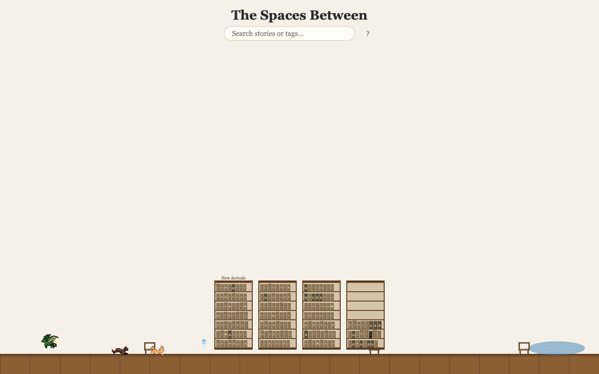

an interdimensional archive · v0.4.0
Every story that could be, from every world that could be, shelved in the dark between. Ten tales, creature companions, and a reading experience that grows moss in the corners. Something small is living in the margins.
free in your browser · no account to begin
what it is
There is a place that exists in the seams — between realities, between timelines, between the worlds you've been to and the ones you haven't. It looks like a library. It holds every story, from every species, from every world where stories were ever written or dreamed or told by a fire that no longer burns.
This is that place. You can read in it. The stories in it can read you back.
the catalog
The archive opens with ten. The rest are shelved behind milestones in the wider world — not locked away, but waiting, to be read once you've earned the right to be surprised. A locked story always shows its title, and a hint of what it's about. Nothing is ever hidden from you. It's only patient.
A civilization's final experiment, and what it learned about the ones who came before.
A creature that is kind for no reason it can find, and a world that can't let it rest.
In a place where warmth is currency, a stranger who gives cold away like a gift.
The oldest network in the archive keeps a secret older than the stories. It has been waiting to be asked.
A mural that has been watching the village for centuries, and is finally tired of being quiet.
A map that redrew itself last night, in a language the cartographer almost recognizes.
A mourning that predates the one who feels it, and a singer who knows the rest of the words.
Some lights in the archive never go out. Some of them remember being lit.
A river that keeps changing where it ends, and the town that keeps moving to keep up.
the margins
The Spaces Between has creature companions — small beings that move between the shelves, that follow you from story to story, that look up at you the first time you notice them.
They are not NPCs. They are not there to hand you quests. They are simply in the library, the way a cat is in a house, and the way some small, curious thing might be in a place that holds every story ever written. What they are for, the archive has not yet decided. Neither have they.
step inside

the door is open
No download. No account to begin. Just a door, a dark, and every story that could be, waiting on the shelves for someone patient enough to read them.
The Spaces Between is a research project of The Multiverse School. Open source, pay what you can. The stories are the same regardless.